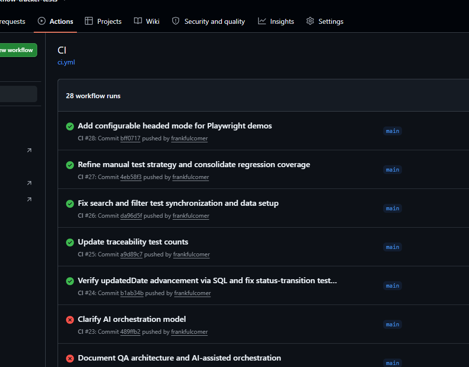

Software Quality
Testing software across healthcare, financial services, and enterprise environments, from exploratory testing through release verification.
Software Quality · Systems · Requirements · Automation
Experienced software professional working across software quality, system testing, requirements-based verification, test automation, and regulated healthcare software, now extending that experience into software development and AI-assisted engineering.
Understand the problem. Solve it well. Deliver the solution. Learn from the result.
Understand what actually needs to be solved before deciding how to solve it.
Prefer the simplest approach that does the job well. Add complexity when it provides real value.
Not every problem needs the same level of process, documentation, or testing. Apply rigor where the consequences justify it.
Every solution involves tradeoffs. Understand them, make them deliberately, and be able to explain why.
Build, test, document, and communicate in ways that leave the work easier to understand and maintain.
Use what worked — and what didn't — to make the next solution better.
Conductor is the name I give my AI-assisted engineering approach — used to build this site.
Problem, constraints, and acceptance criteria are set before any code is written.
AI drafts code, tests, and documentation within those constraints.
Every change is reviewed for correctness, risk, and fit before it's accepted.
Automated and manual testing confirm the result actually meets the stated intent.
Frank remains the conductor — AI accelerates the work; judgment, review, and approval don't move.
Four connected projects show how an interview challenge grew into practical software and a repeatable AI-assisted engineering approach. Select a card to read its story.
During an interview process, I learned that a small software team needed to establish QA practices and automation largely from the ground up. The need was bigger than a handful of test scripts: requirements, coverage, repeatable regression testing, and an approach the team could maintain.
I wanted to demonstrate how I would tackle that work. But a meaningful testing demonstration needs something realistic to test. Building an application, its documentation, and a testing system by hand would take more time than an interview proof of concept justified.
I brought years of experience in software quality, requirements analysis, system testing, and test design. What I didn't bring was extensive hands-on Java/Spring Boot application development experience, and parts of the automation stack were new to me. AI offered a way to bridge that implementation gap without treating unfamiliar syntax as the main problem to solve.
I used ChatGPT and Claude Code to help create a small workflow application: work items can be assigned to owners, edited, moved through defined statuses, and reviewed through their status history. The application was never the main deliverable. It was a controllable, realistic system against which to demonstrate QA engineering.
I directed the problem-solving, requirements, testing priorities, architectural choices, review, and validation. AI accelerated implementation, investigation, and documentation. The aim was not to automate every possible activity; it was to get useful evidence quickly and know whether to trust it.
The timeline was short. My first Justifacts interview was on September 10, 2026. I committed the initial application and Playwright UI suite that afternoon, separated the black-box tests into their own repository and added CI on September 11, and had an onsite interview scheduled for September 16. That is less than a week from the initial interview to the onsite. I shared the initial proof of concept during the interview process and discussed the project and its approach with the team during the onsite interview. They seemed receptive to the ideas, although time constraints prevented a live demonstration. I continued developing the project independently afterward. The capabilities below reflect the current repositories, not necessarily what existed at the time of that conversation.

The project grew from a simple application idea into six lightweight user stories with numbered acceptance criteria, shared interface conventions, and explicit scope boundaries. Tests are mapped back to expected behavior, making it possible to discuss coverage in terms of requirements rather than just test counts.
Testing also improved the requirements. Exploring invalid owner identifiers, blank titles, and unassigned work items exposed behaviors that had not been specified. Those gaps became acceptance criteria before corresponding regression tests were added.
The QA system lives in its own repository and treats the application as a black box. Browser tests check user interaction and representative workflows. API tests check business rules and service responses. Read-only SQL checks verify what was actually persisted in the database—even when an application response appears correct.
Manual testing still has a place. An early set of 27 scripted manual cases was refined to six meaningful user workflows. Repetitive, deterministic checks moved to automation; open-ended questions moved to an exploratory testing charter. The goal was less duplicated effort, not less confidence.
GitHub Actions builds the application on changes to its main branch. After a successful build, it triggers the separate QA repository with the exact application commit identifier. The test workflow starts that revision of the application, runs the UI, API, and database tests, and saves reports and logs.
That separation matters: the tests don't rely on the application's internal classes, and the regression run is tied to the revision that triggered it—not whichever revision happens to be latest later.

One browser test consistently passed locally and failed in CI. Rather than adding an arbitrary delay or weakening the assertion, I compared execution evidence and traced the problem to closely spaced form submissions and asynchronous handling. The test synchronization was corrected in the shared Page Object; the underlying application risk was recorded separately for future work.
Other findings were deliberately documented rather than immediately fixed, including an API error response that exposed an internal Java type. Not every discovery needs to become an unplanned change to the current scope.
AI made it practical to move from an interview problem to a working QA demonstration despite limited familiarity with parts of the development stack. But speed alone was not the measure of success. Requirements still needed scrutiny, test results needed investigation, and the work needed boundaries.
For me, the lasting lesson is that AI can expand implementation capacity while experienced QA judgment determines what to build, what to verify, and when the evidence is good enough.
After the interview, I continued developing Workflow Tracker to challenge myself with unfamiliar technologies and AI-assisted engineering. As the testing approach matured, I found a more immediate problem worth solving: managing my own job search more effectively. The next project, Job Search Hub, took those lessons into a practical application I could use.
Categories describe the kinds of checks used or planned; they are not additive test counts. Planned checks are identified explicitly.
Browser interactions and complete workflows
Playwright automatedEndpoints, contracts, and business rules
REST Assured automatedPersistence, integrity, and history
Read-only SQL checksHuman-led workflows, investigations, and charters
6 workflows and exploratory charterMy job search had become a project of its own. Applications, recruiter conversations, job descriptions, compensation details, and follow-ups were spread across job boards, email, and increasingly complicated spreadsheets. The spreadsheet was useful, but I was spending more time maintaining the information than I wanted—and it was too easy for important history to disappear behind a single current-status cell.
I had just used Workflow Tracker to challenge myself with AI-assisted development and test automation. This time, instead of inventing a system to test, I already had a real problem. I wanted to see whether I could turn that need into software I would actually use, while applying the same discipline I had spent years bringing to other people's products.
The tempting version of Job Search Hub would do everything: collect openings, score matches, track recruiters, manage interviews, and automate follow-up. I deliberately did not start there. The first boundary was simpler: once I submit an application, I need to record it accurately and understand what happens afterward.
That choice gave Phase 1 a concrete purpose. It needed to capture the employer, position, application date, original posting, location, compensation, and source; preserve status changes; and make records easy to find again. Prospecting, automated discovery, and AI job evaluation could wait. Deferring them was a product decision, not an admission that the idea lacked ambition.
One of the first design questions was whether I was simply recreating a spreadsheet in a browser. If each application were just one row with a status field, the new interface would not solve the underlying problem. An application can move from submitted to screening to interviewing and beyond. Those changes have dates, context, and sometimes notes worth preserving.
I used a relational SQLite model to distinguish applications, companies, locations, sources, and status history. Company headquarters is not necessarily the job location. The date I applied is not necessarily the effective date of a later status. Compensation amounts need a basis to mean anything. These distinctions are easy to overlook in a quick prototype; they become important when the information is used for filtering, reporting, or understanding past decisions.
The application has its own tests, but I also wanted independent system-level evidence. I created a separate Selenium and Pytest repository that interacts with Job Search Hub through a real Chrome browser. It does not import the application's business logic or reach into its implementation to manufacture a passing result.
Isolation became a particularly important design decision. Each application test starts its own Flask process against a fresh, disposable SQLite database. It never touches my real job-search records. When a test creates an application, it checks the user-visible result and can query that same temporary database read-only to confirm the record and initial status-history entry actually exist. A status-change test checks that the new event was added without losing the old one. A screen that looks correct is not always proof that the underlying data is correct.
The browser suite covers selected workflows such as application creation, status history, and validation. It is not intended to duplicate every lower-level validation test, and it does not yet cover every Phase 1 scenario. Exhaustive filtering, duplicate-warning behavior, and archive/restore remain examples of work that can be added deliberately rather than pretending that a small suite proves everything.
This reflects how I approach QA professionally: choose the right level for each question, make test data trustworthy, and avoid repeating the same assertion through three layers merely to increase a test count. The objective is confidence in behavior, not a large-looking automation report.
Job Search Hub changed the stakes of my experiment. I was no longer asking only whether AI could help me build unfamiliar software. I was asking whether the result could remain understandable, maintainable, and trustworthy as requirements evolved. That meant paying attention to decisions, test evidence, and the cost of changing direction.
It also exposed a new problem. Coordinating AI assistance across planning, implementation, review, and testing required repeated context handoffs and careful tracking of what had actually been verified. Solving that problem became the next project: Conductor.
How the application preserves useful information and how its behavior is verified.
Employer, role, source, compensation, and location
Structured information captured after applyingChanges preserved instead of overwritten
Effective dates and prior status retainedUser workflows exercised in Chrome
Separate Selenium / Pytest repositoryVerify the data behind the screen
Isolated SQLite database and read-only queriesWorkflow Tracker showed me that AI could help me build a credible demonstration with technologies I did not use every day. Job Search Hub raised the bar: now I had a product with real requirements, persistent data, automated tests, and a reason to keep improving it. The faster implementation became, the more noticeable the coordination work became.
A model could propose a solution, another could implement it, and a third could critique it. But someone still had to carry requirements between them, explain what was authorized, determine which tests actually ran, and preserve the decisions that would matter a week later. Copying conversations between tools was not a sustainable engineering process.
I started treating AI collaboration less like asking one assistant to do everything and more like coordinating a small team with defined responsibilities. That is where the name Conductor came from. I set the direction, constraints, priorities, and acceptance boundaries. AI assists with analysis, planning, implementation, debugging, and review—but I remain accountable for what is built and what is accepted.
The distinction matters because an AI assistant can sound convincing while being wrong, can make a locally sensible change that violates a requirement, or can describe tests it did not independently execute. Experience in QA has made me particularly reluctant to confuse a plausible explanation with verified behavior.
The workflow evolved toward an orchestration role that prepares bounded assignments and reviews results, while Claude Code performs delegated implementation or debugging. Codex can inspect the changes, run independent checks, and bring consequential decisions back to me. The roles are useful precisely because they are not interchangeable: the implementer's own success report is not the final evidence of correctness.
One of the principles captured in the project is: scripts establish facts; AI interprets facts; humans grant authority. A script can record the command that ran, its exit status, and the files that changed. AI can help interpret that evidence and identify what still needs scrutiny. Neither a passing test nor an AI recommendation automatically authorizes accepting a risk, changing requirements, committing, or publishing.
As sessions grew longer, I found that important reasoning could disappear into a transcript. A decision made after comparing alternatives might be forgotten while a polished summary made the work look simpler than it was. Conductor's Python-based bridge therefore records scoped assignments, execution artifacts, source changes, test results, and review material so there is a usable trail behind the outcome.
That record has limits. The bridge can preserve its own delegated runs, but it does not automatically capture every surrounding ChatGPT conversation. Missing source material should be disclosed, not reconstructed as if it were verbatim. Raw transcripts may also contain private context and stay private; the enduring conclusions belong in concise requirements, architecture, test strategy, and decision records.
The process explicitly separates read-only investigation from authorized implementation. It does not allow a requirement to be silently rewritten simply because a test fails. Reviewing a change is not the same as authorizing a commit, and committing is not the same as approving a push or deployment. These are small distinctions until a delegated tool crosses one of them.
At the same time, I do not want a ceremonial framework that consumes more energy than it saves. I use an 'enough' principle: enough structure to preserve intent and verify the result, but no extra tooling or documentation without a clear benefit. The workflow must earn its place through actual use.
Conductor grew out of practical frustrations rather than a plan to invent an AI methodology. It is still being tested and refined, including through the work of building this portfolio. Some parts are implemented tools; others are operating rules and habits that need continued validation.
The larger lesson connects directly to my QA background. Faster implementation does not remove the need for judgment; it increases the value of knowing what to ask, what evidence to trust, and when to stop.
The capabilities and safeguards that make delegated work reviewable.
Keep implementation work tied to an authorized task
Explicit scope and responsibilitiesSeparate creating changes from evaluating them
Review is a distinct responsibilityPreserve what changed and which checks ran
Evidence and decisions kept for follow-upKeep acceptance and publication under engineer control
Approval required for consequential actionsI had started publishing projects on GitHub to demonstrate that my software quality experience was extending into development and modern automation. The repositories contained code, requirements, tests, and engineering notes. But I kept returning to a basic problem: someone considering me for a role might never get far enough into a repository to understand why the work mattered.
A recruiter, business analyst, QA lead, and developer may all look at the same project for different reasons. The recruiter wants to understand my capabilities. The QA lead wants to see how I think about evidence and risk. The developer may want to inspect architecture and code. I needed a place that welcomed all of them without reducing the projects to technology badges.
That became the central content decision. Each project should begin with a recognizable problem, explain the approach and important choices, and then offer deeper technical detail. The GitHub repositories remain the source of evidence. The portfolio provides the context that makes someone interested enough to open them.
It also gave me a useful constraint: the first version did not need a polished gallery of screenshots, elaborate diagrams, or every possible project detail. It needed to be presentable and informative soon, while my job search was active. The work could deepen after it became discoverable.
I could have built the site with a modern frontend framework, a content management system, or a backend service. None was necessary for the first goal. Static HTML and CSS, versioned in GitHub and deployed through Cloudflare Pages, offered a straightforward way to publish quickly with little infrastructure to maintain.
That choice was not about avoiding engineering. It was about applying engineering judgment to scope. The site still needs responsive behavior, accessible navigation, clear content hierarchy, sensible metadata, secure hosting, and reliable updates. A small technology stack does not excuse poor quality; it simply reduces the number of moving parts.
I wanted the visual impression to be mature, approachable, and technically current without looking like a flashy developer template. The design favors light surfaces, readable typography, whitespace, and a recognizable professional photograph. GitHub and LinkedIn are easy to reach, while the project pages let interested readers go deeper.
The same principle shaped the writing. I have years of experience in quality engineering, requirements, regulated software, and cross-functional work. My newer development projects should complement that history, not pretend I have spent decades as a Java or Python application developer. The portfolio needs to be confident about what I know and transparent about what I am learning.
I documented responsive design and mainstream browser support as release expectations, including usable reflow down to 320 CSS pixels. Semantic structure, keyboard navigation, focus visibility, and readable layouts are part of the work, not decorative finishing touches. Those targets need to be checked and refined as the site evolves; a written requirement is not the same as a completed validation result.
The project also provides a practical setting for the Conductor approach. AI can help produce pages and suggest changes, but the content, technical claims, visual acceptance, and decision to publish still need human judgment. The site is public, so inaccurate wording or a broken link is more than an internal development inconvenience.
One of the hardest choices in a personal project is deciding when there is enough. It would be easy to spend weeks refining a page that no employer can yet see. Instead, I chose to put four connected project stories in place and improve them through review. That makes the site useful now while leaving room for real screenshots, diagrams, stronger test evidence, and more detailed case studies later.
The portfolio completes a useful loop: Workflow Tracker tested my abilities, Job Search Hub addressed a real need, Conductor emerged from the challenge of coordinating the work, and this site applies those lessons to communicating the results. The guiding principle is simple: right-sized today, extensible tomorrow.
How the site makes the work accessible and verifiable.
Connect problems, decisions, and lessons
Published case studiesLet technical readers inspect the implementation
GitHub repositories linkedKeep stories readable across screen sizes
Layouts designed to reflowReview content, navigation, and accessibility
Ongoing checks; not a certificationSoftware quality, systems, requirements, implementation, and automation across healthcare, financial services, and enterprise software.
Testing software across healthcare, financial services, and enterprise environments, from exploratory testing through release verification.
Connecting requirements to system behavior and test coverage across software, hardware, interfaces, and workflows.
Helping put software into practical use through configuration, data, customer workflows, troubleshooting, and collaboration across technical and business teams.
Designing and implementing practical automation across user interfaces, APIs, data, and system workflows to improve coverage and catch problems earlier.
Ensuring the right people have the information they need when they need it — communicating clearly and candidly across organizational levels, adapting the detail to the audience, and raising problems and uncertainty early.